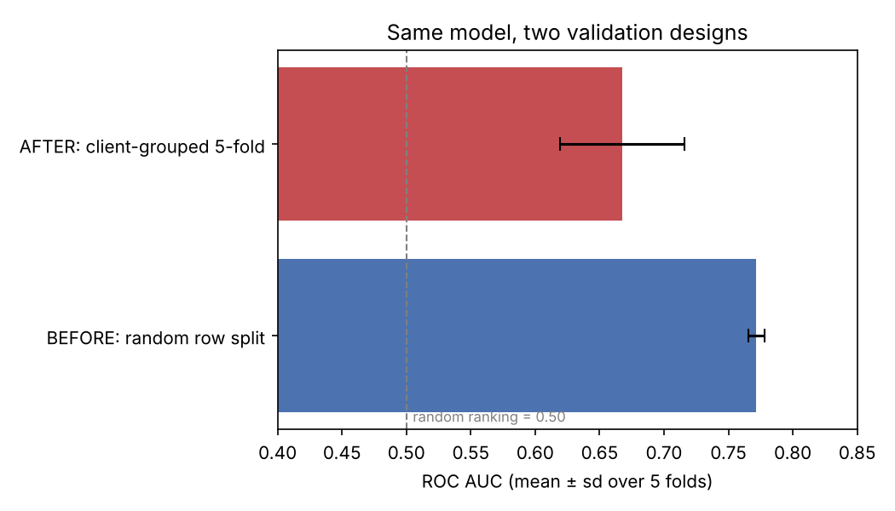
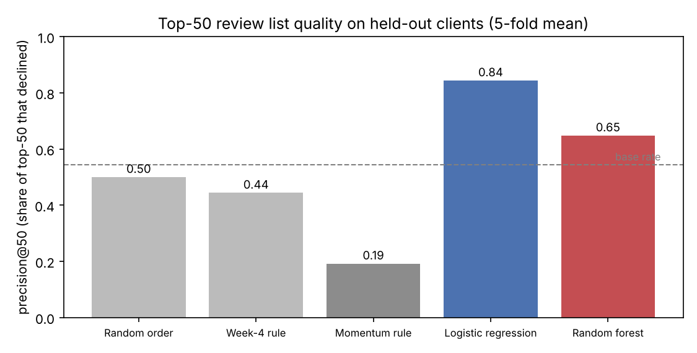
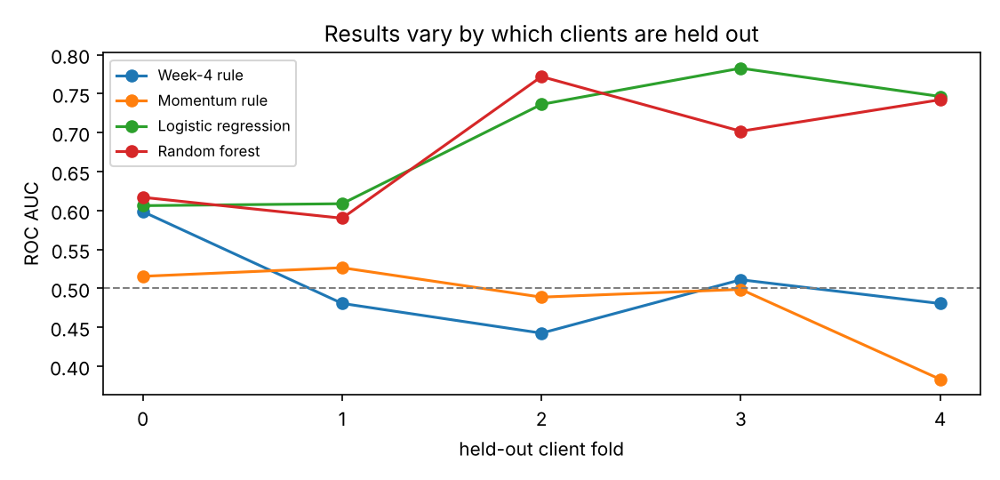
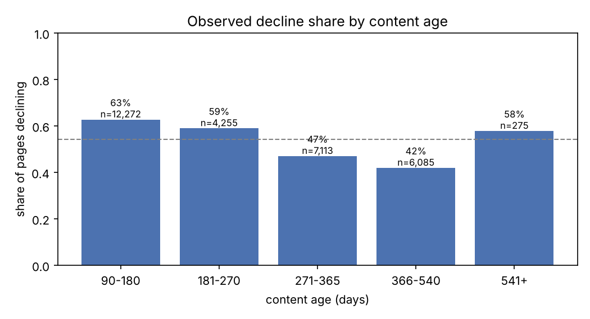
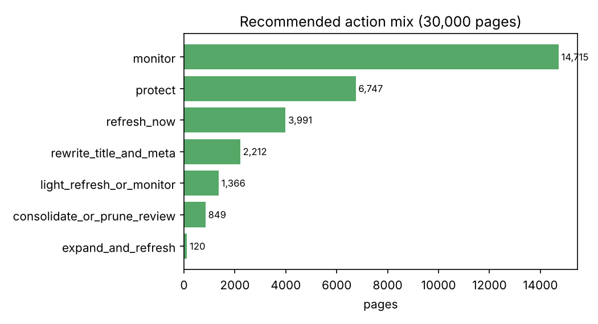

Imagine a content editor on Monday morning: 30,000 pages across many client sites and roughly 50 review slots this week. Some pages are quietly losing visibility. Others had a bad week and will bounce back. Re-reading everything is impossible, and "refresh old content" doesn't say which pages.
This work supports one decision: which ~50 pages to open first, and what kind of fix to consider (refresh, expand, rewrite the search snippet, consolidate, or leave alone). It turns that into a ranked queue with a plain-language reason for every page.
The FlyRank case. FlyRank produces and manages large AI-assisted content portfolios for many client sites at once, and its own research found that strong pages fade unless they are refreshed. The open question is which pages to refresh this month, across clients whose sites behave very differently. This paper answers it for one real, pseudonymized slice of that portfolio, and tests the answer on clients the model never saw.
Lane: Search Traffic Decline Prediction (closest predefined lane: Refresh / Content Opportunity Scoring).
Source. The FlyRank ML Internship starter dataset (content_refresh_anonymized.csv):
30,000 pseudonymized content items from 32 pseudonymized clients, one trailing 90-day snapshot of Google Search Console
and GA4 metrics, plus last-30-day and previous-30-day sub-windows. Most pages are keyword articles (27,207), followed by
feedly articles (2,096) and comparison articles (697). Client sizes range from 3 to 7,008 pages.
Inclusion rules. Pages with at least one impression in 90 days and at least 90 days old, de-duplicated by content id. No rows depend on what happened in the outcome window.
Not used. Client and content ids (used only for grouping), the label sources (trend_direction,
trend_pct), generator metadata, and every column whose time window overlaps the label.
Public-safe: the data contains no client names, domains, URLs or search queries, and neither does this page. All findings are scoped to this slice, not the full 79M-row warehouse.
A page is declining when its impressions in the last 30 days fell by more than 20% compared with the 30 days before. 54.2% of pages meet that bar. The label measures momentum, not overall page quality.
The label compares days 1–30 back with days 31–60 back, so a useful prediction has to be made before days 1–30
happen. Every feature therefore comes from days 31–90 back: previous-30 and first-30 impressions, clicks and sessions
(the first-30 window is derived as 90d − last30 − prev30), early momentum between those two windows, content
age at the prediction moment, word count, keyword volume/competition/CPC with missing-value flags, content type and
intent.
I dropped all 90-day totals and rates (they contain the label window) and "days since last update" (68% of pages were updated inside the label window, so it carries future information).
Three baselines on the same split: random order, the Week-4 rule (0.5·staleness + 0.3·visibility + 0.2·position opportunity) and a momentum rule ("pages already falling keep falling"). Models: logistic regression and a random forest (300 trees, depth ≤ 12).
Five-fold cross-validation grouped by client: whole clients are held out, so every number answers "does this work on a client the model has never seen?" The base rate is reported next to every metric.

trend_pct on purpose pushes AUC to 1.00, so the
test harness catches leaks; (2) the window-aligned features score about the same as the overlapping ones
(0.685 vs 0.668), so the honest feature set costs nothing; (3) ids are never features.| Method (5-fold, unseen clients) | ROC AUC | Avg precision | Precision@50 | Precision@100 |
|---|---|---|---|---|
| Random order | 0.51 | 0.55 | 0.50 | 0.52 |
| Week-4 rule | 0.50 | 0.55 | 0.44 | 0.44 |
| Momentum rule | 0.48 | 0.52 | 0.19 | 0.28 |
| Logistic regression | 0.70 | 0.70 | 0.84 | 0.82 |
| Random forest | 0.69 | 0.68 | 0.65 | 0.68 |
Base rate 0.544 (0.38–0.65 depending on which clients are held out).

The obvious rules failed on this label. The Week-4 rule finds stale-but-visible pages, a useful editorial signal for a different question. The momentum rule is worse than random: pages that fell in the earlier window tended to bounce back (mean reversion) rather than keep falling.
The simpler model won at the top of the list. Logistic regression beat the forest on precision@50 in all five folds (0.74–0.92 vs 0.36–0.76), with similar AUC.

An AUC near 0.70 is useful for ordering a review queue and weak for judging any single page.

Each page gets a forward-looking risk score (the model applied one window ahead), transparent reason codes, and one action. Within an action tier, pages are ordered by risk × value at stake (recent clicks and impressions).

| Rank | Risk | Impr. 30d | Clicks 30d | Age (d) | Words | Reasons |
|---|---|---|---|---|---|---|
| 1 | 0.95 | 212,015 | 8 | 98 | 3,530 | high risk · demand |
| 2 | 0.94 | 122,303 | 10 | 148 | 4,939 | high risk · demand |
| 3 | 0.97 | 63,326 | 0 | 362 | – | high risk · slipping · demand · decay age · snippet |
| 4 | 0.81 | 106,985 | 35 | 144 | – | high risk · demand · snippet |
| 5 | 0.92 | 37,677 | 1 | 97 | 2,810 | high risk · slipping · demand · snippet |
| 6 | 0.90 | 43,343 | 3 | 299 | 7,295 | high risk · demand · decay age |
| 7 | 0.86 | 51,115 | 9 | 313 | – | high risk · demand · decay age · snippet |
| 8 | 0.85 | 38,658 | 13 | 153 | – | high risk · slipping · demand · snippet |
A pattern worth a human look: many top pages earn tens of thousands of impressions but almost no clicks. They are visible but not chosen, which points to intent mismatch or weak snippets as much as freshness.
Everything runs from the public repo with the seed fixed at 42. Open any notebook in Colab or run it locally top to bottom:
work/outputs/capstone_metrics.json, w06_validation_metrics.json, w07_playbook_metrics.jsonHow AI was used: I worked with an AI assistant (Claude) to draft notebook code and this page. I checked the validation design, leakage tests and every number against the executed notebooks.
Built on the FlyRank ML Internship dataset. Thanks to the FlyRank team and the ML track mentors for the data, the starter pipeline, and the weekly sessions on validation and honest claims. The study design also drew on FlyRank's public report The State of AI-Driven SEO in Numbers (March 2026).